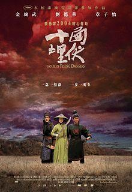

is a 2004 wuxia martial arts film from China.
In AD 859, as the Tang dynasty declines, several rebel groups emerged. The largest of them is the House of Flying Daggers in Fengtian, who battle the corrupt government. Its members steal from the rich and give to the poor, gaining the locals' support. Two police officers, Leo and Jin, are ordered to kill the group leader within ten days, an impossible task given no one even knows the leader's identity.
